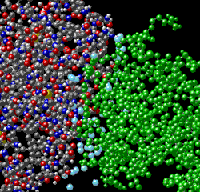

Antibody Structure Problem Set
Problem 8. Water and antigen binding
Tutorial to help answer the question
The crystal structure of the Fab complexed to antigen reveals a number of water molecules that are fixed in the binding area. Many of these water molecules form hydrogen bond bridges between antigen and antibody, contributing to the strength of binding. There is no evidence for the exclusion of water from the antibody/antigen complex. The affinity for binding can be expressed by the equation describing free energy in a system: ΔG = ΔH - TΔS, where G = free energy or energy available for work, H = total energy in a system (enthalpy), T = absolute temperature (in Kelvin) and S = entropy. Which of the following statements are correct concerning the generation of a negative ΔG (indicating a spontaneous reaction) for high affinity antibody/antigen binding?
A. Hydrophobic attractions likely plays little role in the affinity, since a number of water molecules are inside the structural complex formed by antibody and antigen. B. Combining water molecules into the crystal structure associated with antigen binding should have an unfavorable (negative) entropy. C. The formation of hydrogen bonds creates a negative ΔH, and would lead to a favorable negative ΔG. D. The T S term showing a decrease in entropy due to reduced molecular freedom must be less quantitatively than the enthalpy change (ΔH) coming from the formation of hydrogen bonds and van der Waals contacts.
E. All of the above are correct.
Tutorial
|  | Water molecules (light blue) fill in spaces between the antigen and the antibody. The water molecules contribute significantly to the binding energy by creating additional hydrogen bonds. Thus, hydrophobic attraction likely plays little role in the affinity, since a number of water molecules are inside the structural complex. |
Equation for free energy change: ΔG = ΔH - TΔS
In this equation, ΔG is the change in free energy. ΔH is the change in total energy or enthalpy. The TΔS term is the temperature multiplied by the entropy or disorder of the system. The more negative the term ΔG (indicating the release of free energy), the more favorable the reaction.
When the antibody and antigen interact, there is a reduced entropy due to loss of molecular freedom of motion. The presence of water molecules as part of the antigen/antibody structure also reduces entropy (decreasing TΔS). Normally reduced entropy is associated with non-spontaneous reactions. However, hydrogen bonds formed between the antigen and antibody, and involving water molecules as hydrogen bond bridges releases energy and reduces the total energy of the system (decreases ΔH). The formation of van der Waals interactions also releases energy. Thus, ΔH is very negative, which leads to a negative ΔG. A negative ΔG indicates a spontaneous reaction.


The University of Arizona
Wednesday, June 21, 2000
Contact the Development Team
http://www.biology.arizona.edu
All contents copyright © 2000. All rights reserved.